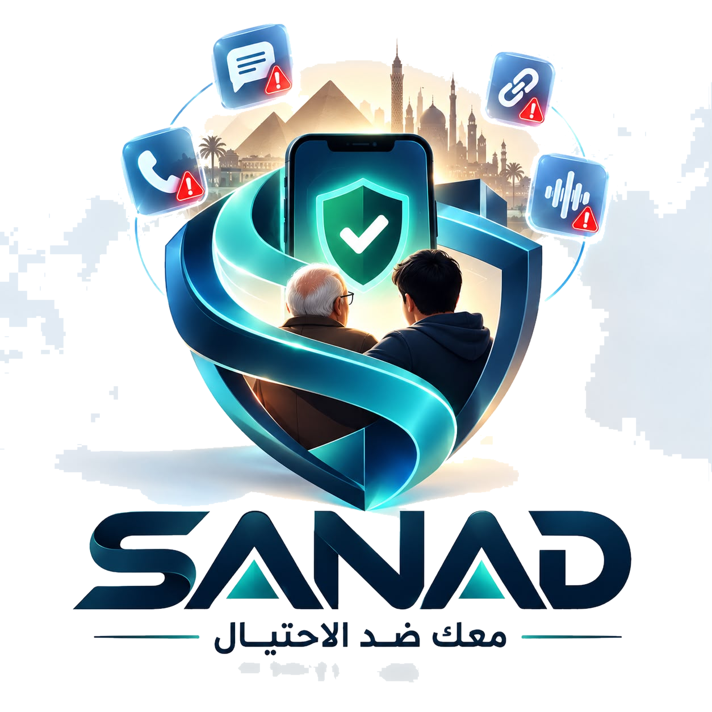

Arabic Scam
Review suspicious Arabic messages, including Egyptian dialect, for scam indicators.

SANAD.Scams are getting smarter. Your protection should be smarter too. SANAD helps you spot suspicious messages, phishing links, fraudulent calls, and synthetic voices — before you act.
SANAD is an AI-powered graduation project developed by students from the Computer Science Technology and Network and Cyber Security Technology programs at El Sewedy University of Technology. Combining artificial intelligence, software engineering, and cybersecurity, SANAD helps people recognize digital fraud and social engineering, with special attention to Egyptian Arabic threats.
A graduation project by Computer Science Technology and Network & Cyber Security Technology students at El Sewedy University of Technology.
Explore the AI-assisted detection tools available in the SANAD dashboard.
Review suspicious Arabic messages, including Egyptian dialect, for scam indicators.
Check SMS content for risky language, sensitive-data requests, and scam patterns.
Inspect links and identify potential phishing risks before opening them.
Upload a WAV recording; speech is transcribed by AI and screened for scam patterns.
Screen WAV audio for signal traits common in synthetic or manipulated voices.
Use the same FastAPI detection endpoints as the SANAD mobile app.
Paste an Arabic message to check for scam indicators.
The site connects to the SANAD AI backend automatically. To use a different backend (for local testing, http://127.0.0.1:8000), enter its URL here. It is saved only in this browser.
Checking connection…Discover the project and its vision through our video presentation.
Watch on YouTube ↗El Sewedy University of Technology · Graduation Project CET491
Computer Science Technology Program
Network and Cyber Security Technology Program
Computer Science Technology Program
Network and Cyber Security Technology Program
Network and Cyber Security Technology Program